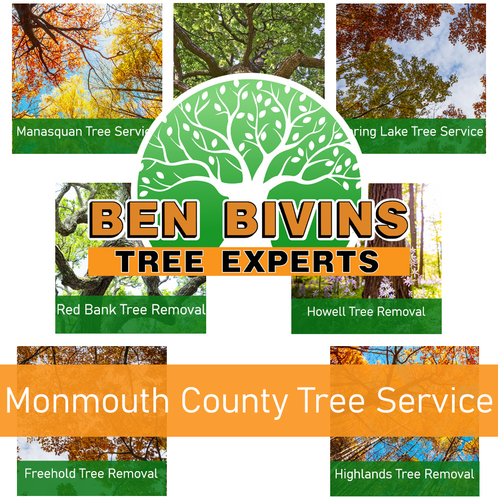

If you are seeking tree service in Monmouth County or tree removal in Monmouth County, look no further. Our company has been providing excellent tree service to Monmouth County for years.
About Monmouth County Tree Removal

Do you need to remove some lifeless trees or unsightly trees? Tree removal is a hazardous job. It involves the use of correct equipment and knowledge of the most current safety standards. Even though it can be tempting to take out a tree yourself from your property, it may be a decision you regret. Attempting tree removal without having the proper training can leave you with a huge mess, lead to major damages, or worse, result in severe injury.
Tree removal in Monmouth County could be necessary for a number of reasons:
- Your yard has too much shade from an overgrown tree
- Tree is deceased & poses a possible safety risk
- Mature tree limbs hanging over walkways that could cause serious harm
- Tree was weakened during a weather event & cannot be saved
- Renovations will be occurring that will inevitably harm the trees
- Tree is losing a great number of branches, leaves, or pine needles & is possible diseased
We are a fully insured and licensed tree company. Please don’t assume the risk of using an uninsured tree company. We highly urge you to reconsider if you are thinking of relying on a friend or family member to perform this work. Our staff is skilled & expertly trained. Plus, our company carries the appropriate qualifications. This ensures the execution of your Monmouth County tree removal is the safest and most effective job possible. Tree removal uses serious machinery and dangerous equipment. It’s best to leave tree service in Monmouth County to the professionals.
Leave it to Ben Bivins Tree Experts! Contact us today for a quote for your Monmouth County tree removal.
In search of Tree Service in Monmouth County NJ?
We carry out all aspects of Monmouth County tree service. A few of these solutions include:
- Tree Trimming – Are trees on your property overgrown? Is your backyard lacking natural light due to an overgrown tree? Trimming a tree’s limbs may make a big difference and may allow you to keep a tree you otherwise considered getting rid of.
- Pruning – Keep your trees happy and healthy. Pruning consists of assessing a tree’s health and deciding to eliminate branches selectively to boost its wellness and longevity. We never remove more than the tree can handle at one time.
- Crown Reduction – We can decrease the size of your tree’s cover using this process. Our team will assess your tree and make suggestions to take out specific branches that will carefully cut back canopy coverage.
- Emergency Tree Service – Do you have a fallen tree that requires prompt attention? Is there a tree which is close to causing harm if not dealt with promptly? You can call us anytime for emergency service.
If you’re a Monmouth County homeowner requiring tree service, call us today. Appointment time can vary depending on weather, season and our current jobs in progress. We will provide you with an estimate and let you know dates available for service after evaluating your particular needs.
Your Experts for Monmouth County Tree Service
We are happy to provide service for many towns in Monmouth County. A few of the towns we’ve provided service to are: